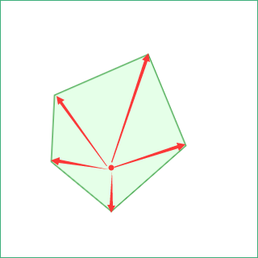
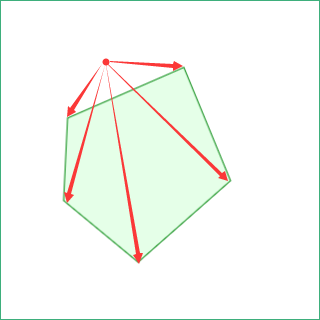
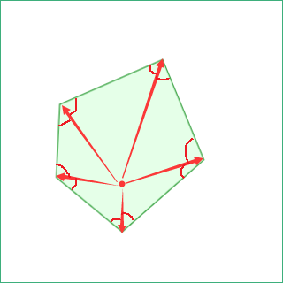
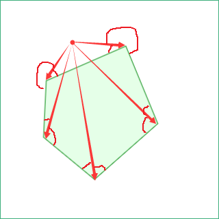
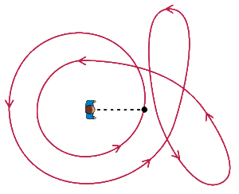
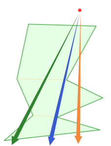
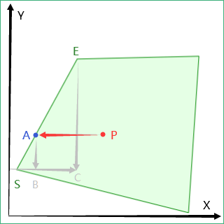

2021-04-15
问题描述
求点是否在多边形内
平面上有一个任意多边形, 指定任意平面点, 求该点是否在该多边形内
演示
计算结果: --
前置知识
合法的多边形只有两种: 凸多边形和凹多边形, 其定义如下:
凸多边形
有三种定义, 如下:
没有任何一个内角是优角(Reflexive Angle, 亦称凹角, 指大于平角(180°)而小于周角(360°)的角. 直角、锐角和钝角统称劣角)的多边形
如果把一个多边形的所有边中, 有一条边向两方无限延长成为一直线时, 其他各边都在此直线的同旁, 那么这个多边形就叫做凸多边形
凸多边形是一个内部为凸集的简单多边形
简单多边形的下列性质与其凸性等价:
- 所有内角小于等于180度
- 任意两个顶点间的线段位于多边形的内部或边上
- 多边形内任意两个点, 其连线全部在多边形内部或边上
延伸: 凸多边形与任意直线最多相交两次
(相交次数不含边及顶点, 这种情况视需要可以算在多边形内也可以不算)
凹多边形
有三种定义, 与凸多边形相对, 不再赘述, 凹多边形总是可以分解为若干个凸多边形
延伸: 凹多边形与任意直线最多相交次数大于两次
多边形演示
正在画多边形(点我/右键结束)重置(不能操作点我)
计算结果: 你画的是 -- ; 射线与多边形相交 0 次
这里使用扫描线法来判断多边形的凹凸, 即: 若多边形的边始终朝一个方向旋转则是凸多边形
推导及代码实现
设多边形上的三个顶点分别为: , 和 , 则两条边为 和 . 若 为正则 在 的顺时针方向, 反之则为逆时针. 代入三点坐标可得叉积为:
代码实现如下:
function isConvex(polygon: Point[]) {
for (let i = polygon.length, j = 0, k = 1, lastTurn = null; i--; k = j, j = i) {
const p0 = polygon[i]
const p1 = polygon[j]
const p2 = polygon[k]
const turn = (p1.x - p0.x) * (p2.y - p0.y) >= (p2.x - p0.x) * (p1.y - p0.y)
if (lastTurn === null) {
lastTurn = turn
} else if (turn !== lastTurn) {
return false
}
}
return true
}
2
3
4
5
6
7
8
9
10
11
12
13
14
15
凹多边形分解为凸多边形就下次吧, 诶嘿嘿 (*^▽^*)~
方法介绍
面积和
若点在凸多边形内, 则点与凸多边形每条边组成的三角形面积和等于该凸多边形的面积


对于凹多边形, 需要先分解为若干个凸多边形, 若点在任意凸多边形内, 则点在该凹多边形内
夹角和
若点在凸多边形内, 则点与凸多边形每个顶点及其所在边组成的夹角和等于该凸多边形的内角和


对于凹多边形, 需要先分解为若干个凸多边形, 若点在任意凸多边形内, 则点在该凹多边形内
优化: 若点在凸多边形内, 则点与凸多边形每个顶点及其所在边组成的夹角均为劣角
卷绕数

卷绕数定义可参考知乎: 卷绕数和高斯-博内定理
当卷绕数为0时, 点在闭合曲线外部
射线法
若射线与多边形相交次数为奇数次, 则该射线的端点在该多边形内
简要证明如下:
我们可以先把任意多边形分解成若干个凸多边形, 将问题转换为射线穿过凸多边形时相交的次数, 根据凸多边形的定义, 这条射线最多与之相交两次

如上图将一个凹多边形分解为从上到下ABC三个凸多边形, 绿/蓝/黄三条射线穿过它们, 下表列出了射线相交情况
| 凸多边形/射线 | 绿 | 蓝 | 黄 |
|---|---|---|---|
| A | 有效1次(相交2次) | 有效1次(相交2次) | 相交2次 |
| B | + 有效1次(相交2次) | + 有效0次(相交2次, 其中1次在端点) | +相交2次 |
| C | + 有效2次 | + 有效1次(相交2次, 其中1次在端点) | +相交2次 |
| 有效相交次数 | 4 | 2 | 6 |
(无效相交次数为与不同凸多边形的公共边相交的情况)
所以, 若射线的端点在整个多边形外, 那么穿过第一个凸多边形时, 要么相交2次要么相交0次, 穿过接下来的凸多边形时, 相交次数要么+2, 要么+0, 所以总是偶数; 若射线端点在整个多边形内, 则显然比在外时的最大相交次数少一次, 因此总是奇数
你可以在多边形演示这一节亲手试试
算法实现
基于以上理论和计算的方便, 从目标点P水平向左发射一条射线, 计算其与多边形相交次数

如图, PA射线与边SE相交于A, 若A点在P点左侧则记为一次相交
问题转化为: 已知P、S、E点坐标分别为 、、, 求A点x坐标是否小于:
function pinp({ x: px, y: py }: Point, polygon: Point[]) {
let odd = false // py射线与多边形的所有边的相交次数是否为奇数
// polygon[i]-polygon[j] 为多边形的一条边
for (let i = polygon.length, j = 0; i--; j = i) {
const { x: startX, y: startY } = polygon[i]
const { x: endX, y: endY } = polygon[j]
// 点与边的端点重合
if ((px === startX && py === startY) || (px === endX && py === endY)) {
return true
}
// 点在边的范围内
if ((py > startY && py <= endY) || (py <= startY && py > endY)) {
// 边与py射线交点的X坐标
const x = startX + ((endX - startX) * (py - startY)) / (endY - startY)
// 点在边上
if (x === px) {
return true
}
// 射线与边相交
if (x < px) {
odd = !odd
}
}
}
return odd
}
2
3
4
5
6
7
8
9
10
11
12
13
14
15
16
17
18
19
20
21
22
23
24
25
26
27
28
29
30
31
32
升维
3D中的情况如何?